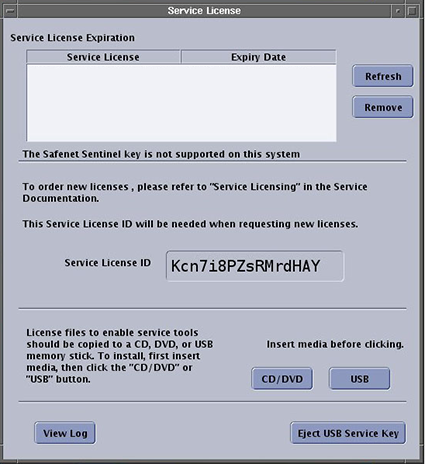
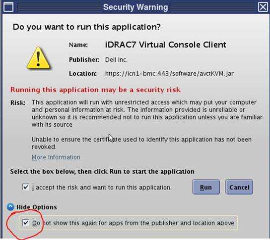
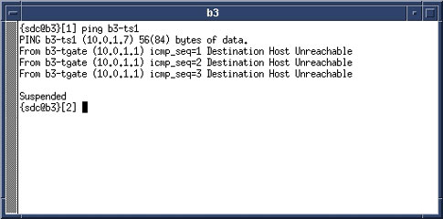

Loading Host System Software (SV25)
Prerequisites
Overview
IMPORTANT: Make sure the Service Pack is installed immediately after completion of the Application Software Load process. See the latest revision of MR Service Pack Software Matrix, DOC1667089, available from the online documentation library.
Make sure the Service Pack is installed immediately after completion of the Application Software Load process.
If more information is needed for how to load Service Packs, refer to Installing Software Updates.
This procedure provides instructions for loading host system software for a new system or an upgrade for SV25 only.
For a new installation, you will need to know several system-specific options. The tables in Guided Install Site Configuration Options lists the types of information you will need to know about the site and the site’s hardware.
During the software load procedure, you will install the site’s service license (SSA) key. The key must be ordered in advance. See Service Licensing for information about ordering the license key.
For set time, refer to Reconfiguring the system
1 Prepare for Software Load
Procedure
- Confirm that all the correct DVDs are available and ready to use.
- If you are installing on a new system, use the tables in Guided Install Site Configuration Options to identify the types of information you will need to have about the site and the site’s hardware.
2 Save Client Information (Existing System)
Procedure
- notice
- notice
- Insert a blank DVD.
- Perform SaveInfo.
 |
|
3 Load Host OS Software
Procedure
- Insert the Host OS Software DVD into the appropriate DVD drive of the host computer.
- Restart the host computer. The system boots from the DVD.
- From the HELiOS based GEHCMR Operating System (MR
OS) Install screen, select 1. GEHCMR – MR OS
Auto Install and press Enter.
The Welcome to HELiOS for 86_64 screen displays.
note:During the beginning of this process (checking dependencies, formatting disk drive, etc.), there are two active buttons in the lower right: ←Back and →Next . Do not select these buttons. Later in the process, these buttons are greyed out (inactive).
The software load proceeds through some checks and then begins the OS load. No responses are required.
A progress bar shows the percentage complete. This process takes about 15 or 20 minutes.
- When the software load is complete, a message appears stating
that installation has completed successfully.
The DVD drive automatically ejects. Remove the DVD.
- Select Reboot from the lower right of
the screen.
A progress bar displays during the reboot sequence. The OS software load takes about 20 minutes.
4 Load MR Application Software
Procedure
- After the system successfully reboots, the Welcome
to MRHost screen displays. Log in using these parameters.
-
User ID: root
-
Password: operator
-
- At the prompt, insert the MR Application Software DVD into the
appropriate DVD drive. Click OK.
From the list called Select your locale, select the language used for the site. Click OK.
A series of messages and a progress bar report the progress of the installation.
The Guided Install screen appears.
- The prompt Do you want to load GI Configuration from
DVD? appears.
-
(For existing systems) Select YES.
-
(For new systems) Select NO.
Proceed to Enter GI Configuration Information (New Systems).
-
5 Load GI Configuration Information from SaveInfo DVD and Complete MR Application Software Load (Existing Systems)
Procedure
- Remove the MR Application DVD.
- From the Set Time/Date screen, select the day of the week from the pull-down menu. Then select the month from the pull-down menu. Set the time and date.
- After the configuration information is loaded, go to the Verification Tab to confirm that the data loaded correctly.
- If all entries pass verification, click Install Software to begin the MR applications load.
A prompt appears reminding you to configure the NTP server (if present) through the Network Info tab. It also reminds you to verify that the current time and time zone are configured properly on the Set Time/Date tab.
If both are correct, select Confirm. If not, select Abort and configure the NTP server (if present) and the current time and time zone.
A message appears at the bottom of the screen saying the application software load is in progress. The MR application load takes about 10 minutes.
note:Work with the customer site to confirm that the NTP server time is correct before rebooting the system. If the NTP server time is not correct when the system is rebooted, the SSA license becomes invalid.
- The Service License screen appears, where you install the site’s service license key (ordered previously). See Service Licensing . Just keep here till other SW install.
Figure 1. Service License Screen

note:The Service License screen is displayed continuously when the user logs on as root.
- From the Guided Install interface left navigation menu, select the Save/Restore screen appears.
- Load the SaveInfo DVD.
Remove the MRApps DVD from the drive. Insert the SaveInfo DVD.
- Select RESTORE INFORMATION and ALL (All is the default). Click Configure.
A progress bar displays. This process takes about 10 minutes.
- Proceed to Load ICN Configuration.
6 Enter GI Configuration Information (New Systems)
Procedure
- Configure all tabs Manually: type in the Network Info; System
Configure; Hardware Configure screens. Use the information that you
collected in Guided Install Site Configuration Options to complete this section.note:
For Mega switch type please select “16”.
- From the Set Time/Date screen, select the day of the week from
the pull-down menu. Then select the month from the pull-down menu.
Set the time and date.note:
Work with the customer site to confirm that the NTP server time is correct before rebooting the system. If the NTP server time is not correct when the system is rebooted, the SSA license becomes invalid.
- After the configuration information is loaded, go to the Verification Tab to confirm that the data loaded correctly.
- If all entries pass verification, Insert the MR Applications
Software DVD, click [Install Software] to begin the MR applications
load.
A progress bar shows the percentage complete. This process takes about 15 or 20 minutes.
- When the MR Application software is loaded, the DVD ejects. The Service License screen appears, where you install the site’s service license key (ordered previously). See Service Licensing .
- Proceed to Load ICN Configuration.
7 Load ICN Configuration
Procedure
- From the Guided Install interface left navigation menu, select ICN Configuration .
- Insert the MR VRE OS DVD. Click OK. Click Configure ICN.
- The DVD ejects, manually push the DVD back, it pops up a window,
Click OK. note:When a Security Warning appears, seeFigure 2.Remember to select Hide Options before click Run
Figure 2. Security Warming

It starts to copy OS content from VRE OS disk to host machine. This process takes about 10 minutes.
- When the ICN OS software load is complete, the DVD ejects.
The ICN configuration starts and takes about 30 minutes to complete.
- Click OK in response to the prompt ICN Configured Successfully.
8 Reset Term Server (New System)
If this is the first or initial software load, perform a term server reset by executing the following steps. Otherwise, proceed to Load MR Operator and Service Documentation.
Procedure
- Exit Guided Install by selecting File > Quit.
- Restart the system and log in.
-
User ID: root
-
Password: operator
-
- Remove the power connector from the term server.
- Press and hold the small square Reset button (next to the power jack), and connect power to the term server
while continuing to press this button.
Figure 3. Reset Term Server

- Continue pressing the Reset button for 20 seconds, or until the LED flashes 1–5–1.
- Verify communication between the host PC and term server as
follows:
- Open a C shell.
- To ping the ts1 address, type ping hostname-ts1 (where hostname is the hospital name). Press Enter.
Verify that proper communication is confirmed in the ping window.
Figure 4. Ping ts1 — Good Communication

If an improper response of Host Unreachable appears, repeat the Term Server Reset procedure (see Step 7).
Figure 5. Ping ts1 — Communication Error Message

- To stop the test, press Ctrl-c.
9 Load MR Operator and Service Documentation
Procedure
- Load the operator manual. See Loading Operator Documentation.
- Click Accept in response to license agreement.
A progress bar shows the percentage complete. This process takes about 5 minutes.
- Proceed to Finalization.
10 Finalization
Procedure
- IMPORTANT: Make sure that the latest Service Pack is loaded. See the latest revision of MR Service Pack Software Matrix, DOC1667089, available from the online documentation library.
- If more information is needed for how to load Service Packs, refer to Installing Software Updates.
- To install software using eLicensing, see Software Option Installation with eLicense Generated Keys.
- Right-click on the screen background and select Reboot. Restart the system and boot to applications as sdc.note:
The initial boot on a new system can take up to 30 minutes.
- Run Check Scan.